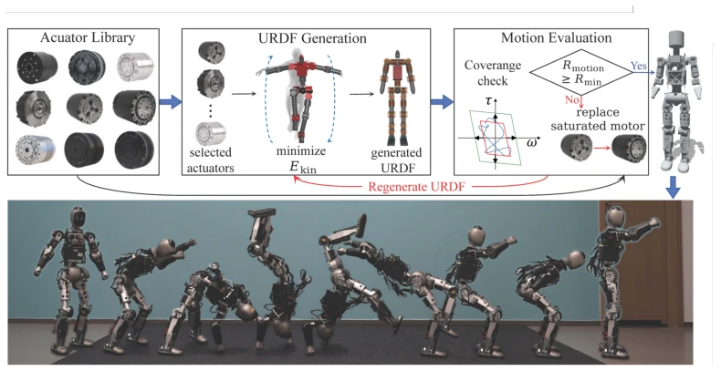
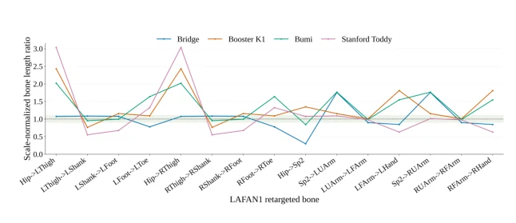
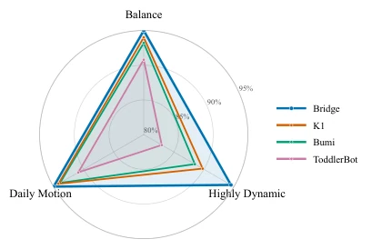
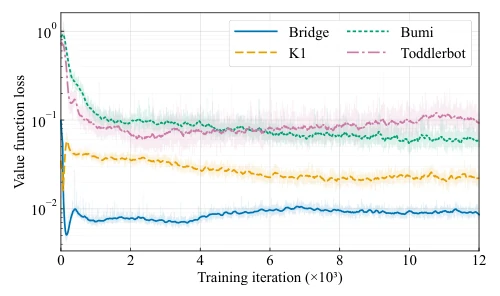
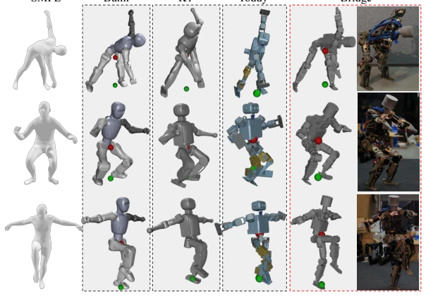
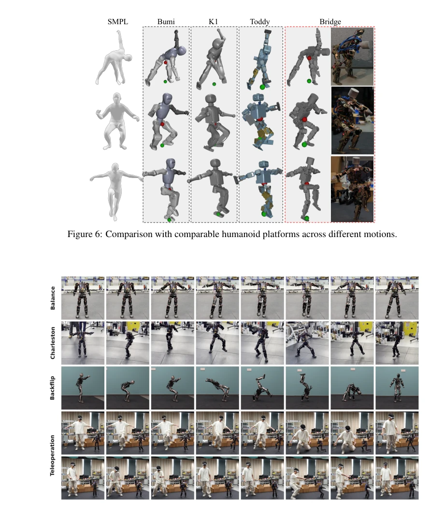

This paper attempts to break the long-standing "cold war" between robot hardware and control algorithms. Although the BRIDGE platform is only 88 centimeters tall and weighs 13 kilograms, through co-design of morphology and control, it defeats mainstream competitors such as Bumi and K1 in motion fidelity. However, the authors also frankly admit that using only rotary motors instead of tendon-driven mechanisms limits the dynamic upper bound and joint volume optimization. Open-source code and policies are highlights, but whether the price of $1.5K is sufficiently "democratic" for the research community remains to be seen. Overall, it is a pragmatic attempt in the field of physical AI, successfully incorporating hardware design into the closed loop of control optimization, but the grand vision of "general embodied" appears somewhat overly optimistic on the 13 kg small body, after all it cannot complete complex manipulation tasks.
Existing development paradigms separate hardware design from whole-body control, leading to suboptimal systems. Hardware design is often based on heuristic rules [4, 6], ignoring downstream task constraints; control strategies assume fixed morphology [10, 11]. This results in movements lacking human fluidity [23]. For example, although ToddlerBot [4] is open-source, its morphology is manually specified, not considering control performance. To leverage human behavior data [1, 2], the problem of morphology-control mismatch must be solved, otherwise algorithms must constantly compensate for hardware defects [21, 22]. This paper aims to enable hardware to better adapt to control requirements through co-design, rather than having control accommodate hardware, thereby improving the overall performance of humanoid robots.
Proposes a data-driven co-design framework containing four stages. First, DoF compression, screening waist degrees of freedom through motion retargeting error, retaining the most critical axes. Second, actuator-aware instantiation, considering physical envelopes and torque-speed curves, rather than ideal kinematics, ensuring physical feasibility. Next, motion-based evaluation, training tracking policies and calculating dynamic errors to verify if the morphology supports specific actions. Finally, failure-guided refinement, upgrading if actuators saturate, and re-evaluating the whole. The core innovation is introducing the SHL metric, jointly measuring kinematic retargeting and dynamic tracking performance, ensuring the morphology not only "looks like a human" but also "moves", achieving bidirectional optimization of hardware and control.

Figure 1: BRIDGE: An Open-Source Humanoid Platform via Morphology–Control Co-Design for Physical AI. Standing 88 cm tall and weighing 13 kg, BRIDGE is a compact humanoid capable of executing complex real-world behaviors—ranging from stable daily motion and balance recovery to agile, highly dynamic motions. Videos and open-source materials: https://sites.google.com/ view/bridgerobot
Comparing three existing platforms: Bumi, K1, ToddlerBot. Metrics include kinematic error Ekin, dynamic error Edyn, and human similarity SHL. Bridge is highest on SHL (0.5252), success rate 94.83%. Advantage is obvious in dynamic actions, exceeding K1 by 4.7 percentage points. Subjective experiments show better balance relationships, center of gravity projection more reasonable. Limitations lie in rotary motors and size, limiting load and space. Experiments prove that co-design can significantly improve kinematic fidelity and dynamic feasibility, providing a new paradigm for open-source humanoid robots.

Figure 3: Scaling of different parts of the humanoid platform relative to the SMPL humanoid model.

Figure 4: Success rates of different humanoid platforms on the unified LaFAN1 and bones seed benchmark, grouped into Balance, Highly Dynamic, and Daily Motion categories.

Figure 5: Value-function-loss convergence of BeyondMimic across different humanoid morpholo- gies on the dance2 subject2 motion from the LaFAN1 dataset.

Figure 6: Comparison with comparable humanoid platforms across different motions.

Figure 7: Qualitative real-world demonstrations of Bridge. We present single-leg balance, Charleston dance, backflip, and teleoperation sequences.